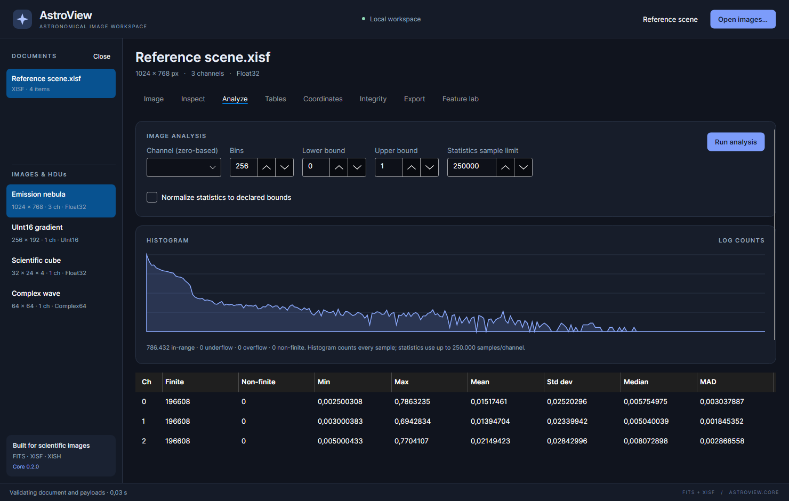

Analysis and exact samples
Use Analyze to measure scientific sample values. A brightened preview can make faint structure easier to see, but it does not change the numbers measured here.

Run statistics and a histogram
- Select the image in the sidebar.
- Open Analyze.
- Select the histogram Channel (zero-based).
- Choose Bins, Lower bound and Upper bound.
- Set Statistics sample limit and, if wanted, Normalize statistics to declared bounds.
- Click Run analysis.
The statistics table contains all available image channels. The histogram shows
the one channel chosen in the controls. For RGB, channels start at 0, 1 and
2; a fourth channel can be alpha where that is how the file represents it.
Choose meaningful histogram bounds
Use bounds appropriate to the source values. A normalized floating-point image
might use 0 to 1; a full-range UInt16 gradient uses 0 to 65535. If you
leave 0 to 1 for unnormalized UInt16 data, many values will appear as overflow
instead of in the plotted bins.
The application starts with 256 bins and accepts 8–4,096. More bins reveal finer distribution detail but do not increase the precision of the source image. The graph uses logarithmic counts to make small populations visible alongside large ones.
The summary separates in-range, underflow, overflow and non-finite samples. Add all these counts when checking the number of samples in a channel; the bin sum alone can be smaller than the image's pixel count.
Read the statistics table
| Column | Meaning |
|---|---|
| Ch | Zero-based channel index |
| Finite | Number of sampled finite values |
| Non-finite | Sampled NaN/infinite values |
| Min / Max | Extrema among sampled finite values |
| Mean | Arithmetic average of sampled finite values |
| Std dev | Dispersion around the sampled mean |
| Median | Middle sampled value |
| MAD | Median absolute deviation, a measure of sampled spread |
The default statistics limit is 250,000 values per channel. The actual sample count can be smaller because the sampling stride is chosen to stay within that limit. Sampling can miss a rare hot pixel, non-finite value or extreme, so do not treat sampled Min/Max as guaranteed full-image bounds.
Histograms inspect every sample in their selected channel. That is why their totals can differ from the sampled Finite/Non-finite counts. Raising the statistics limit improves coverage of the source but can increase processing time and memory.
Normalization expresses statistics relative to declared bounds. It is independent of display stretch and does not automatically change the histogram's manually entered bounds. Floating-point statistics can round very large integers; use the exact sample inspector when integer precision matters.
Inspect exact stored samples
Scroll to SAMPLE INSPECTOR → Exact stored samples. Enter a zero-based linear start index and a count from 1 to 256, then click Read. The range must fit in the image buffer.
The index is a linear storage index, not an (x,y) position. In planar data, one
channel's samples precede the next channel's samples; in interleaved data,
channels alternate within each pixel. Consult the selected image's metadata
for layout and sample type. FITS data is presented through the application's
supported image interpretation, including its scaling conventions.
UInt64 values are printed directly as integer text rather than passing through
double precision. For a useful demonstration, generate a UInt64 image in Feature lab → Image generator and read its
first four samples. You should
see 0, 1, 9007199254740993 and 18446744073709551615.
Complex data can be inspected here even though it has no general image preview. The display keeps its real/imaginary sample representation available rather than pretending it is an ordinary monochrome exposure.
Read a rectangular region
In Rectangular region, enter zero-based X/Y and positive width/height, then click Read. The selected histogram channel determines which channel is shown. The rectangle must stay inside a two-dimensional image.
Region values are displayed as Float64, so very large integers may round. Widths/heights are bounded by the controls, and the interactive inspector limits the total region samples, including all channels, to 4,096. A smaller displayed region still requires decoding the full source block; this is not an on-disk partial-read feature. Reduce the region when the limit is exceeded, and use exact stored samples for UInt64 precision checks.